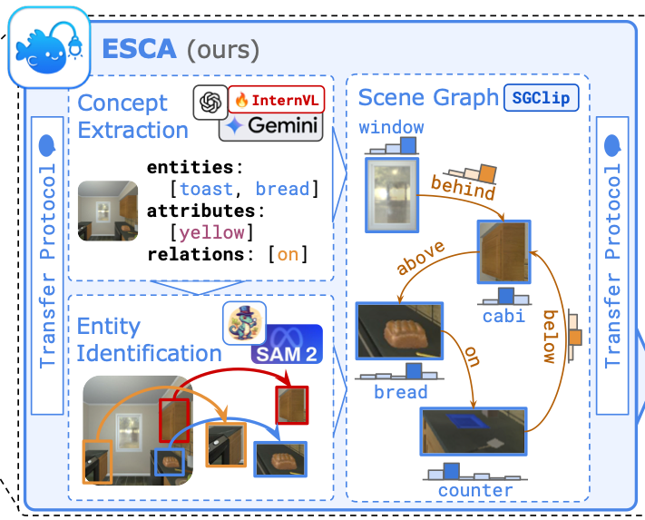
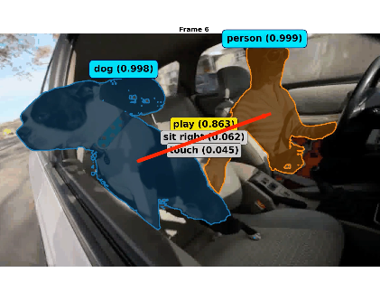
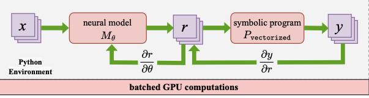
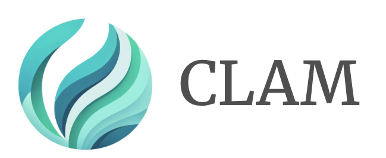
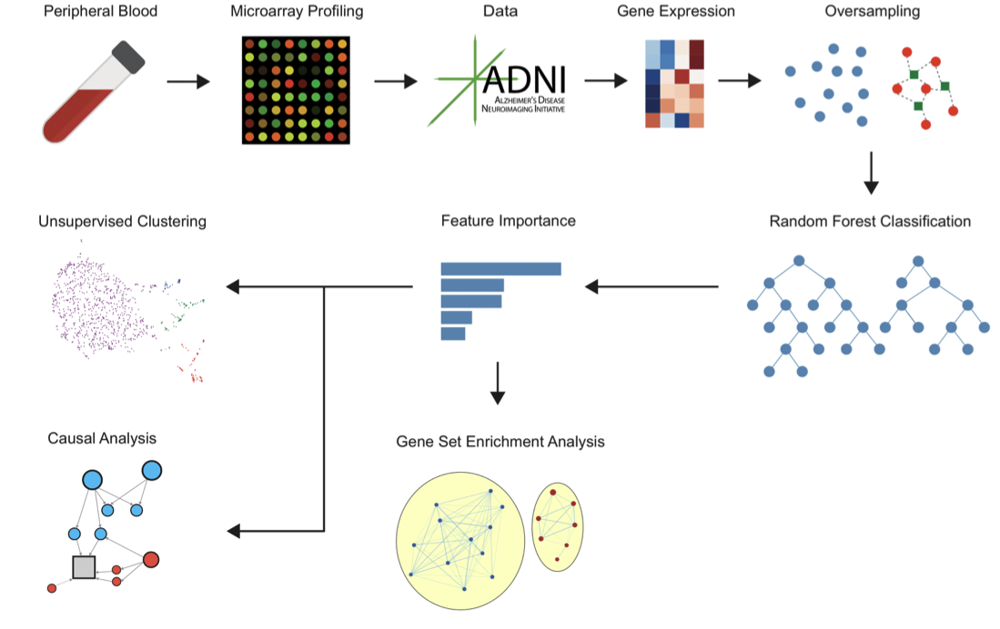

|
Amish Sethi I'm an undergraduate student at the University of Pennsylvania, currently in my senior year pursuing a Bachelor's of Science in Engineering with a 4.0/4.0 GPA. My major is Computer Science, and I am getting minors in mathematics and data science, with an expected graduation in May 2026. I work with Professor Mayur Naik and Professor Dinesh Jayaraman on scalable neurosymbolic learning, robust video perception, and embodied AI. My interests span neural-network optimization, structured and trustworthy perception for robots, and foundation models that connect videos, language, and robot policies. I enjoy building efficient, interpretable systems that make large language and vision models reliable in the physical world. I'm incredibly grateful to Professor Mayur Naik and Professor Dinesh Jayaraman for their continuous support and guidance throughout my research journey. I also deeply appreciate the mentorship and inspiration from the PhD students I've worked closely with: Neelay Velingker, Oscar Xu, Aaditya Naik, and Jiani Huang. |

|
News
|
ResearchI'm interested in deep learning and neurosymbolic methods for building reliable embodied AI. My work spans three layers of the AI stack: (1) optimizing and understanding large language models, (2) scalable neurosymbolic frameworks, and (3) structured video and robot policy models that make perception and action robust in open-ended environments. |

|
Amish Sethi, Jiani Huang, Felix Zheng, Brandon Yang, Chris Watson, Aurora Qian, Junyao Shi, Mayur Naik, Dinesh Jayaraman Robotics: Science and Systems (RSS) 2026 — planned submission (senior thesis) This project builds retrieval-augmented vision-language-action (VLA) policies that adapt to new manipulation tasks without additional in-domain teleoperation. We use VINE’s spatio-temporal scene graphs to index large corpora of robot manipulation trajectories and retrieve structurally similar examples at inference time, enabling a Franka arm to solve novel multi-stage tasks via in-context learning alone (no finetuning or additional data collection needed). |
|  |
Jiani Huang*, Amish Sethi**, Matthew Kuo*, Mayank Keoliya, Neelay Velingker, JungHo Jung, Ziyang Li, Ser-Nam Lim, Mayur Naik NeurIPS 2025 Spotlight (top 3%) paper / website ESCA addresses that up to 69% of embodied AI failures stem from perception errors. Using VINE, a foundation model that extracts spatio-temporal scene graphs from video, ESCA provides explicit spatial context for vision-language models. Our approach improved success rates by up to 10%, spatial reasoning by 14.6%, and reduced perception errors from 69% to 30% on EmbodiedBench without requiring model retraining. |
|  |
Amish Sethi*, Jiani Huang*, Matthew Kuo*, Ziyang Li, Mayank Keoliya, Neelay Velingker, Mayur Naik, Sernam Lim Foundation Model website code / model / dataset VINE is a foundation model that transforms video into structured scene graphs capturing entities, attributes, spatial relationships, and temporal dynamics. Given a video and optional keywords, VINE outputs probabilistic scene graphs that provide rich semantic structure beyond object detection. Trained on 87K+ videos using neurosymbolic learning, VINE is both promptable and fine-tuneable for diverse applications from contextualizing vision-language models to learning policies from broad robot demonstration corpora. |

|
Zhiqiu Xu*, Amish Sethi*, Mayur Naik, Ser-Nam Lim NeurIPS 2025 ER Workshop arXiv / website Delta Activations represents finetuned models by measuring shifts in their internal activations relative to a base model. This approach clusters models by domain and enables retrieval using only 20 examples. We finetuned and released over 700 open-source models on Hugging Face, demonstrating the utility of this representation for model selection and merging in building reliable model ecosystems. |
|  |
Aaditya Naik, Jason Liu, Claire Wang, Amish Sethi, Saikat Dutta, Mayur Naik, Eric Wong ICML 2025 Publication DOLPHIN is a novel framework combining symbolic reasoning and neural computation using CPU-GPU hybrid execution. Its execution of vectorized probabilistic computations on the GPU allows it to achieve up to 62× faster convergence than baselines across 13 benchmarks spanning text, image, and video modalities. |
|  |
Neelay Velingker, Amish Sethi*, Jason Liu*, William Dodds*, Zhiqiu Xu, Saikat Dutta, Mayur Naik, Eric Wong ICML ES-FoMo II 2024 paper / code CLAM is a framework unifying parameter-efficient finetuning, quantization, and pruning for LLMs. It enables chaining of adapters with low overhead and high modularity, outperforming state-of-the-art methods by up to 6.5%. CLAM achieves superior trade-offs in compression and downstream performance, beating QLoRA while effectively halving the number of active bits. |
|  |
Amish Sethi*, Andrew Ni* International Science and Engineering Fair 2021 paper This project utilized machine learning, clustering, and dimensionality reduction algorithms in
|
|
* Equal contribution |
|
Teaching and MentorshipIn the Fall of 2024, I served as the Head Teaching Assistant (TA) for CIS 7000: Large Language Models, the University of Pennsylvania's first dedicated course on LLMs. The course enrolled over 120 students and covered the theory, design, training, compression, deployment, and application of large language models. As Head TA, I was responsible for:
In the Summer of 2024, I mentored five undergraduate students through the Penn Undergraduate Research Mentoring Program (PURM) on the CLAM project, focusing on efficient finetuning, quantization, and pruning. I taught these students how to conduct research in machine learning, work with LLMs, and develop scalable optimization frameworks. The students I mentored were: |
Academic Services
I served as a reviewer for the Workshop on Efficient Systems for Foundation Models II at ICML 2024, AAAI 2026, and ICLR 2026.
Grant Writing
I authored a successful proposal for the Grant for Faculty Mentoring Undergraduate Research (GfFMUR), awarded by the University of Pennsylvania. This competitive grant supported undergraduate research efforts and resulted in an $8,000 award to fund mentorship and research on neurosymbolic AI.